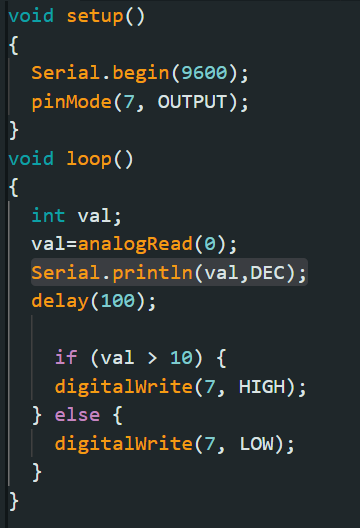

What is the code & What it does
The main code is in the image next to this text but I will go through important lines of code and what they mean, and if you can change them
- Void setup ()
- Allows for the system to get directions before the code is started, Set up before beginning the program
- Serial.begin(9600)
- Allows for us to know the baud rate, for this program its 9600 baud.
- pinMode(7, OUTPUT)
- Allows for us to see where the voltage is going to go, input 7 and where is is leaving, in Output, the GND section
- void loop()
- Allows the code to repeat again and again
- int val;
- Makes it so any number input is an interger
- val=analogRead(0)
- Reads the valuse of the corresponding anologue pin
- Serial.print1n(val,DEC);//
- the first part sends teh data to a serial model, Val allow for the program to know what you want to print, DEC allows the arduino to see we want it in decimal form
- delay(100)
- Delays the light going on for 100 miliseconds
- if (val>10)
- if the value surpasses 10
- digitalWrite(7, HIGH)
- Then a high voltage goes into pin 7; LED on
- else
- DigitalWrite (7,LOW)
- A low voltage goes into the point; LED off
Return

The code that is supposed to be used & the format used